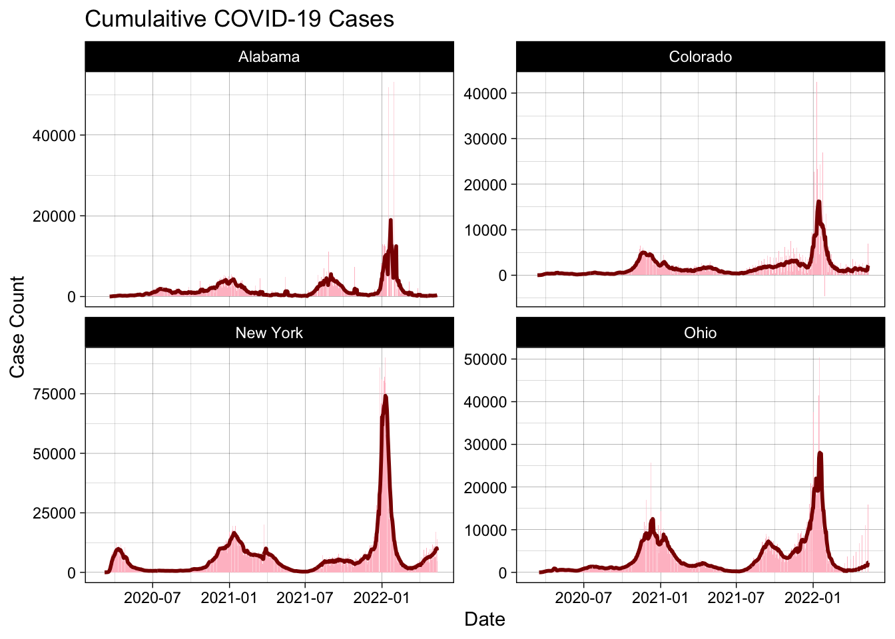
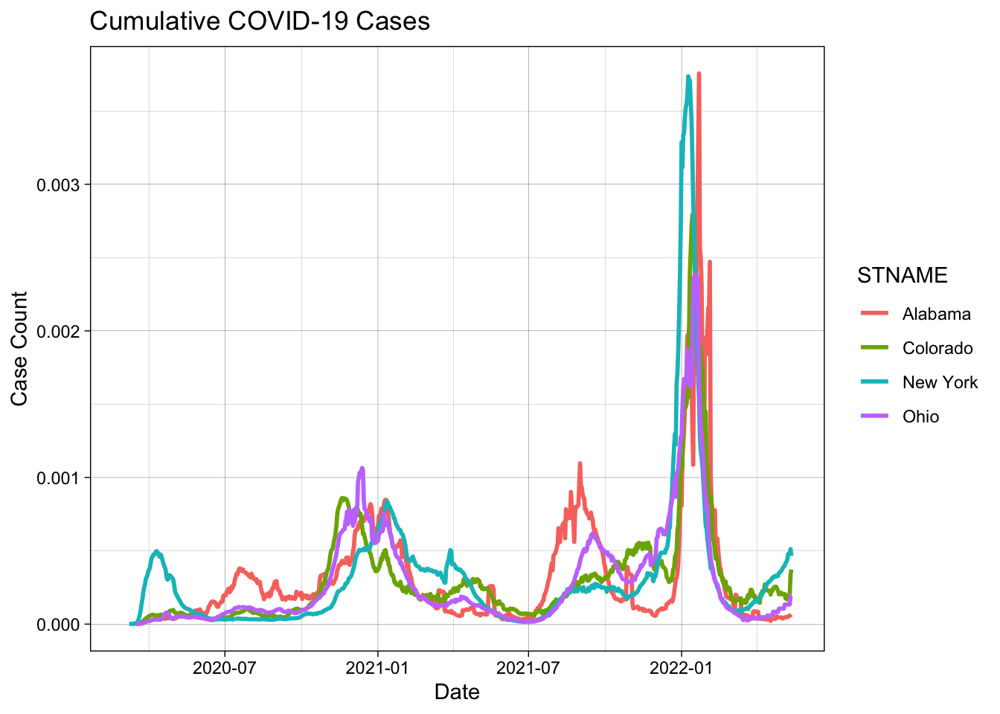
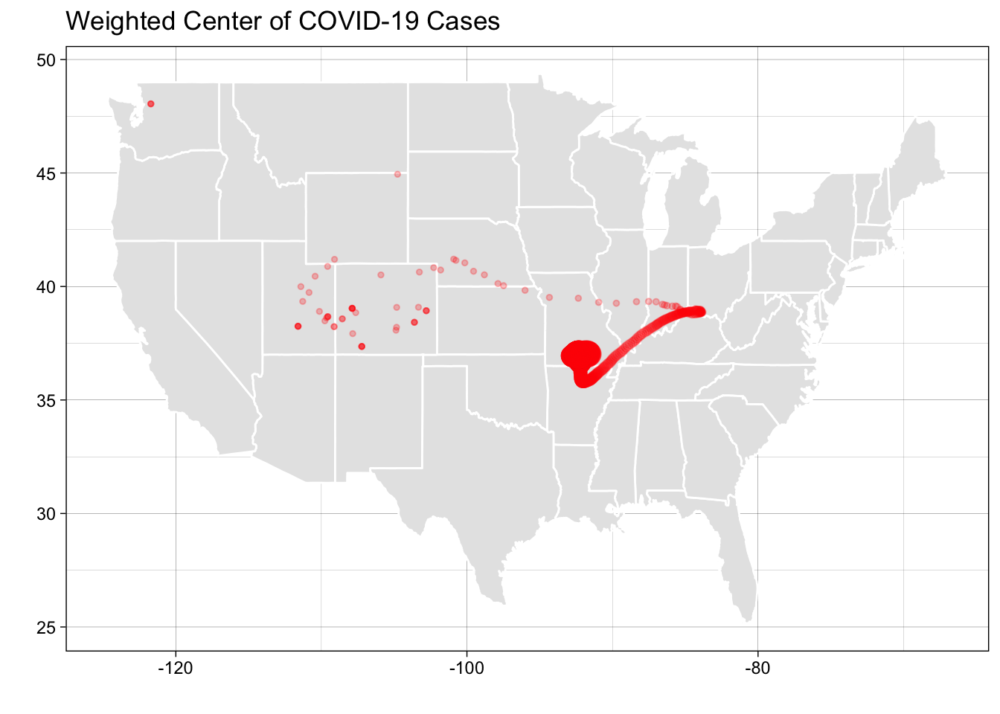

── Conflicts ────────────────────────────────────────── tidyverse_conflicts() ──
✖ purrr::compose() masks flextable::compose()
✖ dplyr::filter() masks stats::filter()
✖ dplyr::lag() masks stats::lag()
ℹ Use the conflicted package (<http://conflicted.r-lib.org/>) to force all conflicts to become errors
Question 2
#step 1 Start by reading in the data from the NY-Times URL with read_csv (make sure to attach the tidyverse)library(tidyverse)url ='https://raw.githubusercontent.com/nytimes/covid-19-data/master/us-counties.csv'covid_data =read_csv(url)
Rows: 2502832 Columns: 6
── Column specification ────────────────────────────────────────────────────────
Delimiter: ","
chr (3): county, state, fips
dbl (2): cases, deaths
date (1): date
ℹ Use `spec()` to retrieve the full column specification for this data.
ℹ Specify the column types or set `show_col_types = FALSE` to quiet this message.
#step 2 Create an object called my.date and set it as “2022-01-01” - ensure this is a date object:. Create a object called my.state and set it to “Colorado”.#In R, as.Date() is a function used to convert character strings, numeric values, or other date-related objects into Date objects. It ensures that dates are stored in the correct format for date-based calculations and manipulations.#txt is a character string (class(txt) will return "character").#It is not recognized as a date yet, just a regular text string.txt <-"2022-02-01"class(txt)
[1] "character"
#as.Date(txt) converts the character string "2022-01-01" into an actual Date object in Rdate_example <-as.Date(txt)class(date_example)
#step 3 The URL based data read from Github is considered our “raw data”. Remember to always leave “raw-data-raw” and to generate meaningful subsets as you go.# Start by making a subset that limits (filter) the data to Colorado and add a new column (mutate) with the daily new cases using diff/lag by county (group_by). Do the same for new deaths as well.colorado <- covid_data |>filter(state == my.state) |>group_by(county) |>arrange(date) |>mutate(new_cases = cases -lag(cases),new_deaths = deaths -lag(deaths)) |>ungroup()
#4 Using your subset, generate (2) tables. The first should show the 5 counties with the most CUMULATIVE cases, and the second should show the 5 counties with the most NEW cases. Remember to use your my.date object as a proxy for today’s date:filter(colorado, date == my.date) |>slice_max(cases, n =5) |>select(Date = date, County = county, Cases = cases) |>flextable() |>set_caption(caption ="Most Total Cases")
Date
County
Cases
2022-02-01
El Paso
170,673
2022-02-01
Denver
159,022
2022-02-01
Arapahoe
144,255
2022-02-01
Adams
126,768
2022-02-01
Jefferson
113,240
filter(colorado, date == my.date) |>slice_max(cases, n =5) |>select(Date = date, County = county, Cases = new_cases) |>flextable() |>set_caption(caption ="Most New Cases")
Date
County
Cases
2022-02-01
El Paso
630
2022-02-01
Denver
389
2022-02-01
Arapahoe
401
2022-02-01
Adams
326
2022-02-01
Jefferson
291
Question 3
# Raw count data can be deceiving given the wide range of populations in Colorado countries. To help us normalize data counts, we need supplemental population data to be added. Population data is offered by the Census and can be found here. Please read in this data.pop_url <-'https://www2.census.gov/programs-surveys/popest/datasets/2020-2023/counties/totals/co-est2023-alldata.csv'
# To make these compatible we need to:#Convert the STATE numeric into a character forced to 2 digits with a leading 0 (when needed)#Convert the COUNTY numeric into a character forced to 3 digits with leading 0’s (when needed)#Create a FIP variable the STATE numeric into a character forced to 2 digits with a leading 0 (when needed)#Adding leading 0’s#We can use the sprintf() function in base R to add leading zeros. The sprintf() function is powerful and versatile for string formatting.number <-123(formatted_number <-sprintf("%06d", number))
[1] "000123"
#Here’s what’s happening:#“%06d” is the format specifier.#%d tells sprintf() that we’re dealing with an integer.#06 indicates that the output should be 6 characters wide, with leading zeros added if necessary.
#Concatinating Strings.#In R, paste() provides a tool for concatenation. paste() can do two things#concatenate values into one “string”, e.g. where the argument sep specifies the character(s) to be used between the arguments to concatenate, orpaste("Hello", "world", sep=" ")
[1] "Hello world"
#collapse specifies the character(s) to be used between the elements of the vector to be collapsed.paste(c("Hello", "world"), collapse="-")
[1] "Hello-world"
#In R, it is so common to want to separate no separator (e.g. paste(“Hello”, “world”, sep=““)) that the short cutpaste0` exists:paste("Hello", "world", sep ="")
[1] "Helloworld"
paste0("Hello", "world")
[1] "Helloworld"
#Given the above URL, and guidelines on string concatenation and formatting, read in the population data and (1) create a five digit FIP variable and only keep columns that contain “NAME” or “2022” (remember the tidyselect option found with ?dplyr::select). Additionally, remove all state level rows (e.g. COUNTY FIP == “000”)pop <-read.csv(pop_url) |>filter(COUNTY !=0) |>mutate(fips =paste0(sprintf("%02d", STATE), sprintf("%03d", COUNTY))) |>select(fips, contains('NAME'), contains('2021'))
#Now, explore the data … what attributes does it have, what are the names of the columns? Do any match the COVID data we have? What are the dimensions… In a few sentences describe the data obtained after modification:#What is the range of populations seen in Colorado counties in 2021:range(pop$POPESTIMATE2021)
[1] 54 9809462
#Join the population data to the Colorado COVID data and compute the per capita cumulative cases, per capita new cases, and per capita new deaths:perCap =inner_join(colorado, select(pop, fips, pop = POPESTIMATE2021), by ='fips') |>filter(date == my.date) %>%mutate(cumPerCap = cases / pop,newCasesPerCap = new_cases / pop,newDeathsPerCap = new_deaths / pop)
#Generate (2) new tables. The first should show the 5 counties with the most cumulative cases per capita on 2021-01-01, and the second should show the 5 counties with the most NEW cases per capita on the same date. Your tables should have clear column names and descriptive captions.perCap |>select(County = county, Cases = cumPerCap) |>slice_max(Cases, n =5) |>flextable() |>set_caption(caption ="Most Cummulitive Cases Per Capita")
County
Cases
Crowley
0.5117698
Bent
0.4118749
Pitkin
0.3429659
Lincoln
0.3424082
Logan
0.3047701
perCap |>select(County = county, Cases = newCasesPerCap) |>slice_max(Cases, n =5) |>flextable() |>set_caption(caption ="Most New Cases Per Capita")
County
Cases
Crowley
0.009764603
Bent
0.004120622
Sedgwick
0.003869304
Washington
0.002875924
Las Animas
0.002651039
Question 4
#Filter the merged COVID/Population data to only include the last 14 days. Remember this should be a programmatic request and not hard-coded. Then, use the group_by/summarize paradigm to determine the total number of new cases in the last 14 days per 100,000 people. Print a table of the top 5 counties, and, report the number that meet the watch list condition: “More than 100 new cases per 100,000 residents over the past 14 days…”safe <- pop %>%inner_join(colorado, by ="fips") %>%filter(between(date, my.date -13, my.date)) |>group_by(county) %>%summarize(lag =sum(new_cases) / (POPESTIMATE2021[1]/100000)) %>%ungroup()safe |>select(County = county, Cases = lag) |>slice_max(Cases, n =10) |>flextable() |>set_caption(caption ="Cases per 100,000 in the last 14 days")
County
Cases
Crowley
3,923.278
Lincoln
3,599.488
Alamosa
3,594.909
Mineral
3,336.921
Conejos
3,152.203
Fremont
3,097.264
Huerfano
2,682.434
Bent
2,659.674
Montezuma
2,649.234
Mesa
2,573.695
Question 5
#Given we are assuming it is February 1st, 2022. Your leadership has asked you to determine what percentage of deaths in each county were attributed to COVID last year (2021). You eagerly tell them that with the current Census data, you can do this!#From previous questions you should have a data.frame with daily COVID deaths in Colorado and the Census based, 2021 total deaths. For this question, you will find the ratio of total COVID deaths per county (2021) of all recorded deaths. In a plot of your choosing, visualize all counties where COVID deaths account for 20% or more of the annual death toll.#Dates in R#To extract a element of a date object in R, the lubridate package (part of tidyverse) is very helpful:tmp.date =as.Date("2021-02-01")lubridate::year(tmp.date)
#In this question, we are going to look at the story of 4 states and the impact scale can have on data interpretation. The states include: New York, Colorado, Alabama, and Ohio. Your task is to make a faceted bar plot showing the number of daily, new cases at the state level.#Examples#Rolling Mean on a Numeric Vector Since align = "center" by default, values at the start and end are dropped.library(zoo)# Sample datax <-c(1, 2, 3, 4, 5, 6, 7, 8, 9, 10)# Rolling mean with a window size of 3rollmean(x, k =3)
[1] 2 3 4 5 6 7 8 9
#Rolling Mean with Padding Missing values are filled at the start and end.rollmean(x, k =3, fill =NA)
[1] NA 2 3 4 5 6 7 8 9 NA
#Aligning Left or Right The rolling mean is calculated with values aligned to the left or rightrollmean(x, k =3, fill =NA, align ="left")
[1] 2 3 4 5 6 7 8 9 NA NA
rollmean(x, k =3, fill =NA, align ="right")
[1] NA NA 2 3 4 5 6 7 8 9
#Hint: You will need two group_by calls and the zoo::rollmean function.state_covid = covid_data %>%group_by(date, state) %>%summarise(cases =sum(cases)) %>%filter(state %in%c('New York', "Ohio", 'Colorado', "Alabama")) %>%group_by(state) %>%mutate(newCases = cases -lag(cases),roll = zoo::rollmean(newCases, k =7, align ="right", fill =NA)) |>ungroup()
`summarise()` has grouped output by 'date'. You can override using the
`.groups` argument.
#Using the modified data, make a facet plot of the daily new cases and the 7-day rolling mean. Your plot should use compelling geoms, labels, colors, and themes.ggplot(state_covid, aes(x = date)) +geom_col(aes(y = newCases), fill ="pink", col =NA) +geom_line(aes(y = roll), col ="darkred", size =1) +theme_linedraw() +facet_wrap(~state, nrow =2, scales ="free_y") +labs(title ="Cumulaitive COVID-19 Cases",x ="Date", y ="Case Count")
Warning: Using `size` aesthetic for lines was deprecated in ggplot2 3.4.0.
ℹ Please use `linewidth` instead.
Warning: Removed 4 rows containing missing values or values outside the scale range
(`geom_col()`).
Warning: Removed 7 rows containing missing values or values outside the scale range
(`geom_line()`).

#the story of raw case counts can be misleading. To understand why, lets explore the cases per capita of each state. To do this, join the state COVID data to the population estimates and calculate the #Additionally, calculate the 7-day rolling mean of the new cases per capita counts. This is a tricky task and will take some thought, time, and modification to existing code (most likely)!pp = pop %>%group_by(STNAME) |>summarise(state_pop =sum(POPESTIMATE2021)) |>inner_join(state_covid, by =c("STNAME"="state")) %>%mutate(perCap = newCases / state_pop) %>%group_by(STNAME) %>%mutate(roll = zoo::rollmean(perCap, k =7, align ="right", fill =NA)) %>%ungroup()
#Using the per capita data, plot the 7-day rolling averages overlying each other (one plot) with compelling labels, colors, and theme.ggplot(pp, aes(x = date)) +geom_line(aes(y = roll, col = STNAME), size =1) +theme_linedraw() +labs(title ="Cumulative COVID-19 Cases",x ="Date", y ="Case Count")
Warning: Removed 28 rows containing missing values or values outside the scale range
(`geom_line()`).

Question 7
#For our final task, we will explore our first spatial example! In it we will calculate the Weighted Mean Center of the COVID-19 outbreak in the USA to better understand the movement of the virus through time.#To do this, we need to join the COVID data with location information. I have staged the latitude and longitude of county centers here. For reference, this data was processed like this:#counties = USAboundaries::us_counties() %>% #dplyr::select(fips = geoid) %>% # sf::st_centroid() %>% #dplyr::mutate(LON = sf::st_coordinates(.)[,1], # LAT = sf::st_coordinates(.)[,2]) %>% # sf::st_drop_geometry()#write.csv(counties, "../resources/county-centroids.csv", row.names = FALSE)
#Please read in the data (readr::read_csv()); and join it to your raw COVID-19 data using the fips attributes using the following URL:'https://raw.githubusercontent.com/mikejohnson51/csu-ess-330/refs/heads/main/resources/county-centroids.csv'
#The mean center of a set of spatial points is defined as the average X and Y coordinate. A weighted mean center can be found by weighting the coordinates by another variable, in this total cases such that:
Rows: 3221 Columns: 3
── Column specification ────────────────────────────────────────────────────────
Delimiter: ","
chr (1): fips
dbl (2): LON, LAT
ℹ Use `spec()` to retrieve the full column specification for this data.
ℹ Specify the column types or set `show_col_types = FALSE` to quiet this message.
#For each date, calculate the Weighted Mean x coord and y coord using the daily cumulative cases and the weight #In addition, calculate the total cases for each day, as well as the month.meta =read_csv('https://raw.githubusercontent.com/mikejohnson51/csu-ess-330/refs/heads/main/resources/county-centroids.csv') %>%inner_join(covid_data) %>%group_by(date) %>%summarise(wmX_c =sum(LON*cases) /sum(cases),wmY_c =sum(LAT*cases) /sum(cases),cases =sum(cases)) %>%arrange(date) |>mutate(d =1:n())
Rows: 3221 Columns: 3
── Column specification ────────────────────────────────────────────────────────
Delimiter: ","
chr (1): fips
dbl (2): LON, LAT
ℹ Use `spec()` to retrieve the full column specification for this data.
ℹ Specify the column types or set `show_col_types = FALSE` to quiet this message.
Joining with `by = join_by(fips)`
ggplot(meta) +borders("state",fill ="gray90", colour ="white") +geom_point(aes(x = wmX_c, y = wmY_c, size = cases), color ="red", alpha =.25) +theme_linedraw()+labs(color ="Time",size ="Cases",x ="", y ="",title ="Weighted Center of COVID-19 Cases") +theme(legend.position ="none")

#Plot the weighted mean center (aes(x = LNG, y = LAT)), colored by month, and sized by total cases for each day. These points should be plotted over a map of the USA states which can be added to a ggplot object with:borders("state", fill ="gray90", colour ="white")
mapping: group = ~group, x = ~long, y = ~lat
geom_polygon: na.rm = FALSE, rule = evenodd
stat_identity: na.rm = FALSE
position_identity
#In a few sentences, describe the movement of the COVID-19 weighted mean throughout the USA and possible drivers of its movement given your knowledge of the outbreak hot spots.